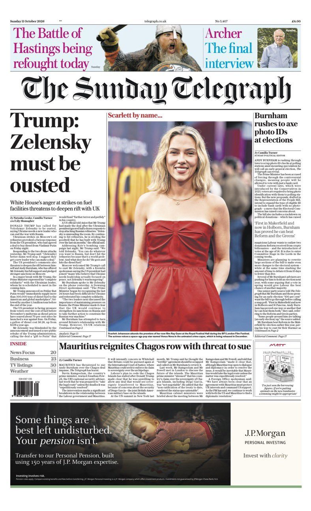
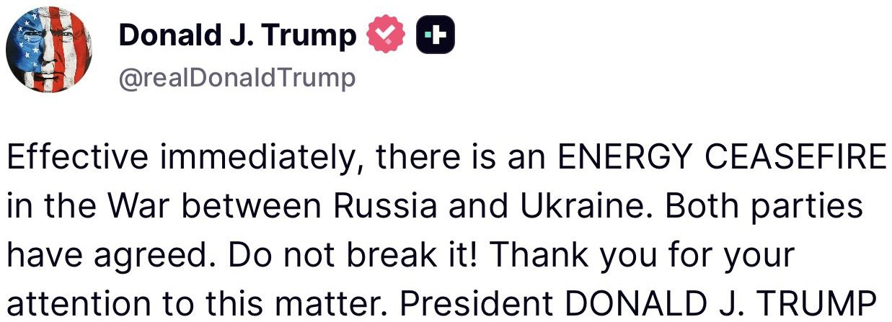
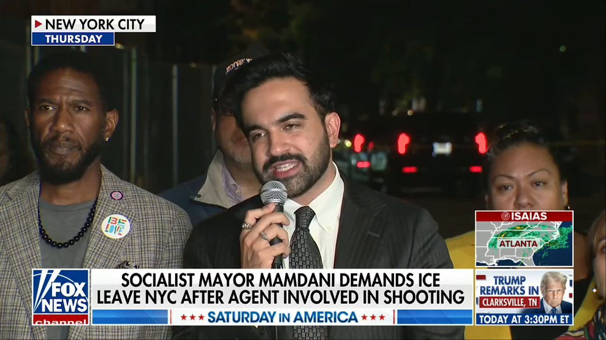
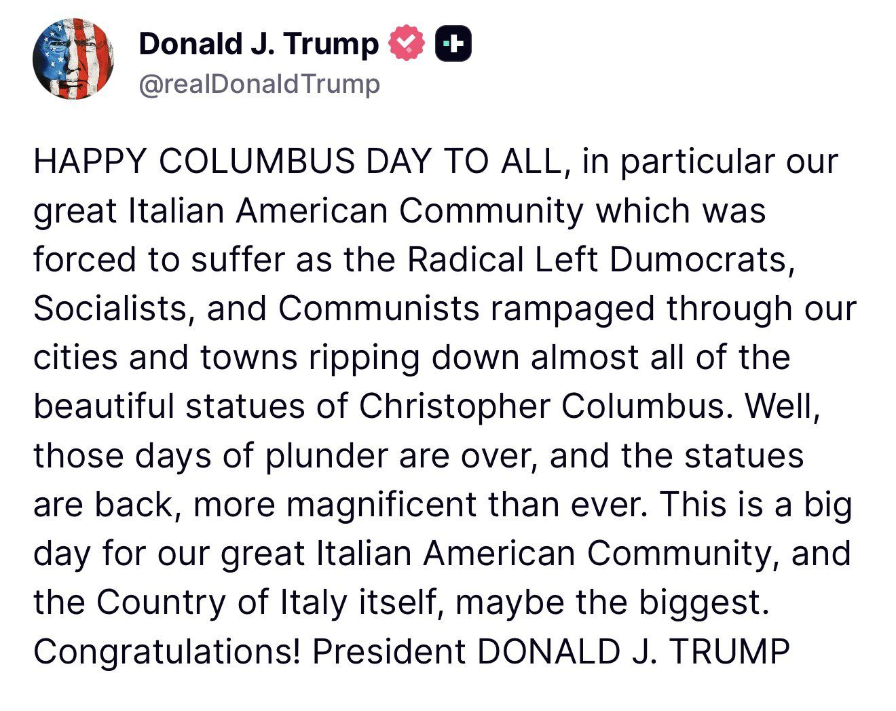
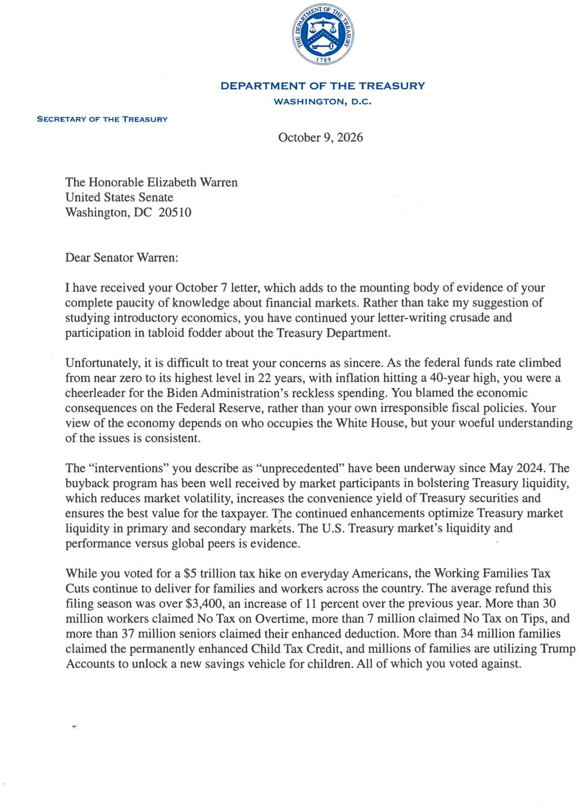
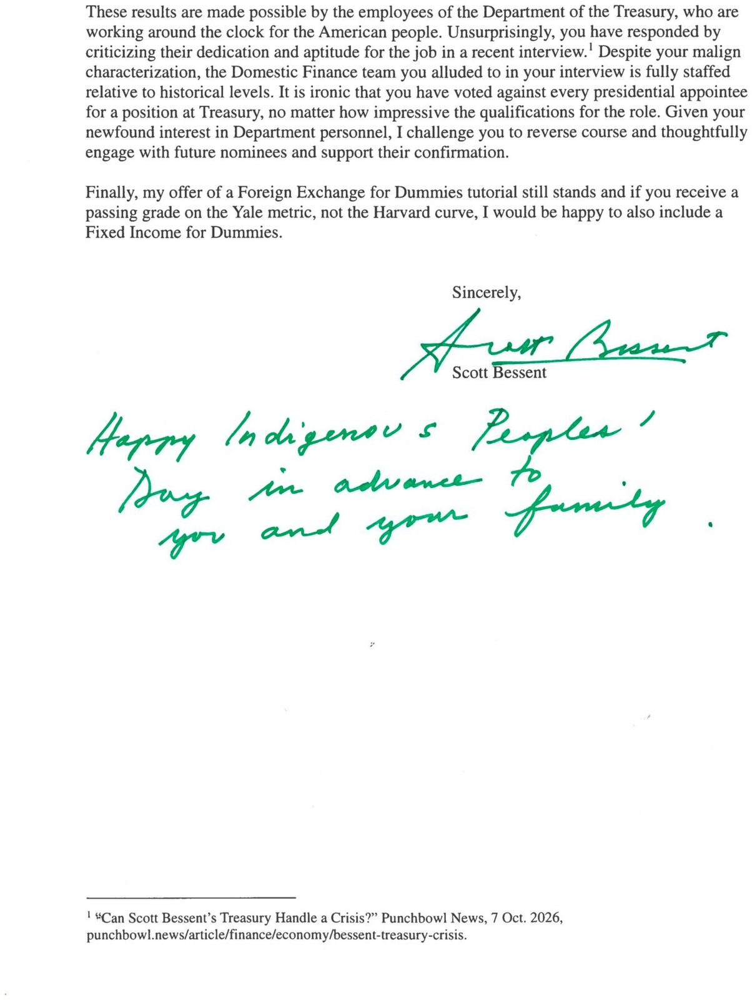
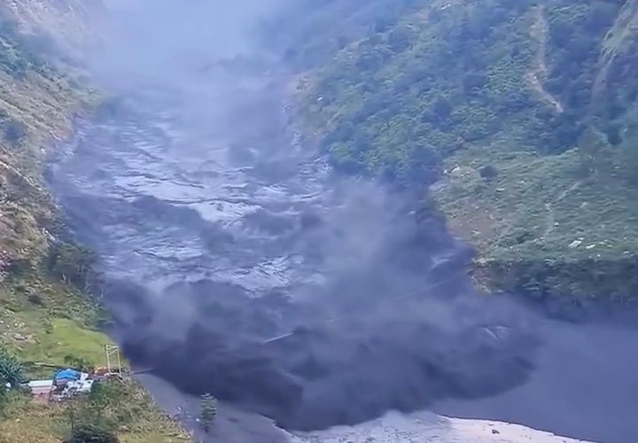
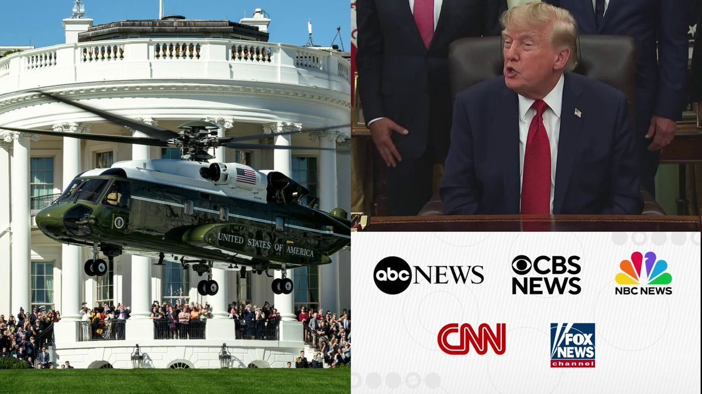
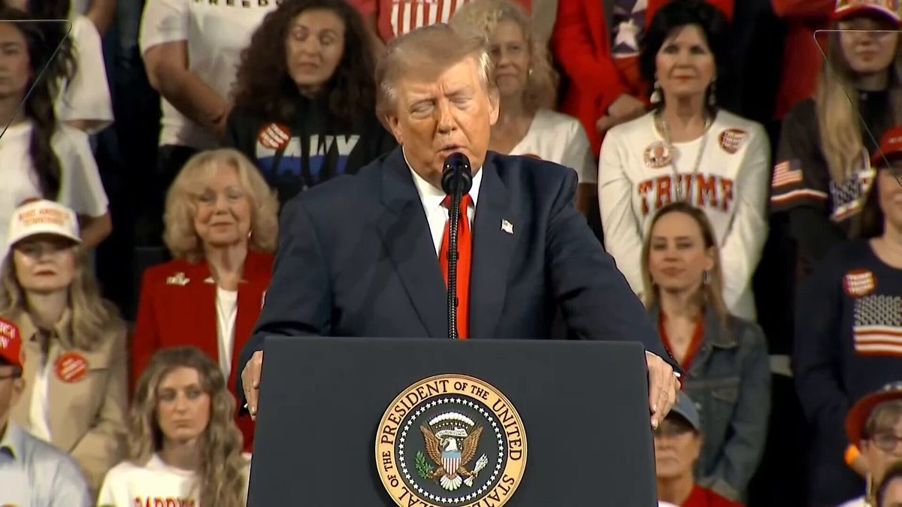

BREAKING: Iran says it has struck another crude oil supertanker which is now burning in the Strait of Hormuz. Iran’s IRGC says the ship had turned off its navigation systems and “violated regulations.” This marks the third oil tanker that has been struck this weekend.
🚨 HOLY CRAP! Treasury Sec. Scott Bessent just MIC DROPPED every critic of President Trump’s Russian diesel surge deal
"The EUROPEANS have given the Russians more money since the start of this war than they have given the Ukrainians!” 🤯
“So for THEM to say that we cannot have a respite in diesel pricing is COMPLETELY HYPOCRITICAL." 🔥
Europe spent years funding Putin with energy purchases, and now they're lecturing America about one diesel deal…NOT GONNA FLY
Iran tried to block the world from fuel, and President Trump went around them easily!
Lower prices on the way. No apologies.
Zelensky should step down.
🚨 WOW! President Trump is RIPPING IN to Zelensky for blocking a peace deal, and says Putin is doing the world a favor by surging diesel supply
"RUSSIA would like to make a deal...Zelensky does NOT want to make a deal." 🤯
"Putin would like to see a settlement...he's FREEING UP a LOT of oil for the world. That's a good thing. At a VERY low price."
UKRAINE SHOULD GET A NEW PRESIDENT. Call ELECTIONS.
No more funding Zelensky's war machine!
Trump is not only pushing for peace but getting prices DOWN as well.
Time to end this war. NOTHING is getting accomplished by keeping it going
▶ Watch on X🚨 JUST IN: Elon Musk SIDES WITH PRESIDENT TRUMP after 47 called for Ukraine to oust Zelensky and get a new leader
MUSK: "Zelensky has gone TOO FAR." 🎯
Trump nailed it: Zelensky is UNREASONABLE and keeps blocking peace progress. Zelensky has done this for ALL of 47's second term
The odds of that war ending go up if Zelensky is out.
▶ Watch on XEven the British media narratives are changing, with a “Trump: Zelensky must be ousted” headline and a Scarlett Johansson picture instead of Zelensky’s.
Tipping point.

Reporter: Ukrainians are suffering from the attacks.
Trump: I suggest they get a new leader who can make a deal. It’s time for Ukraine to get a new president.
▶ Watch on XBREAKING: The Trump Administration is now threatening to halt weapons supplies to Ukraine in an effort to pressure Zelensky to stop striking Russian energy infrastructure, per FT.
Details include:
1. The US is reportedly lobbying European countries in an attempt to end the attacks on Russian oil refineries
2. The US is also threatening to cut off intelligence sharing with Ukraine
3. Just hours ago, President Trump said Russia and Ukraine agreed to an "energy ceasefire" which Zelensky said he was unaware of
US-Ukraine tensions continue to mount.

BREAKING: Ukraine’s President Zelensky says the energy ceasefire between Ukraine and Russia announced by President Trump just minutes ago “is news to me,” per Axios.
“If President Trump negotiated it with Putin, please tell us when the ceasefire begins,” Zelensky said.
I agree, time for Ukraine to get a new leader
Dusting off this tweet from April because this gap in shared understanding of LLM capability is *widening*. It's now less "two groups of people speaking past each other" and more a sharp funnel.
- Napkin math somewhere around 6B people (~75% of the population) have barely come in contact with LLMs at all. - Around 1-2B (~20%) are casual and infrequent users of free-tier ChatGPT-like products. This group sees derpy chatbots and treats them a bit like a better Google search, a writing aid, or etc. Maybe an agent tries to book you a flight. I have non-tech friends who (reasonably, imo) say they have not much use for it at all. Even many professionals outside of math&code are in this tier. For example, execs and many other functions spend a lot of their time talking to other people, so while they understand what is happening intellectually, it is still second-hand and a bit abstract. - Now we get to professional use of frontier-grade LLMs in math&code. Somewhere around 20M people (0.2%) see first-hand that large, complex projects that used to take them weeks/months can now be completed by agents with a prompt. Building apps, copying apps, translating apps, decompiling apps from binaries... This has all happened very quickly and recently - less than 1 year ago, I was writing code manually by hand, typing memorized computer code commands into a code editor character by character, occasionally pressing Tab to autocomplete a little chunk of code. - And finally we get to the ~5,000 people (~0.00006%) with access to frontier-grade systems internally. The external world has seen the preview. It looks like swarms of thousands of agents collaborating over weeks on software mega projects: minting zero days, running cyber attacks and defenses at machine speeds, discovering new science, advancing the frontier of mathematics. Things that would have taken top professionals in the industry years of work. Meanwhile, human review and comprehension are starting to fall behind. For example, people are still involved in the "archeology" of the OpenAI-HF incident from many months ago. Mathematicians may be poring over the 722 manuscripts on frontier mathematics for a while.
The funnel is driven by a combination of factors: 1. The impact scales with ambition, problem size, and horizon. A question with a paragraph answer barely stresses the system. You need a reservoir of big, difficult problems that you really care about. This aspect drives the consumer / professional dimension of the funnel. 2. The jaggedness of the system (which I have written about a lot separately). Capability peaks in domains that are digital, verifiable and economically valuable. This is because LLM capability emerges from reinforcement learning on verifiable rewards on a curated environment mixture driven by revenue potential. This aspect primarily drives the area (e.g. math&code) dimension of the funnel. 3. Access. Free-tier, paid-tier, internal.
So this is the weirdness of the moment. The general public has mostly not interacted with these systems. When they have, it looks like a derpy chatbot. The majority of professionals still see only a modest uplift. And a small sliver of professionals are experiencing the vertigo of the curve going vertical. And it is all happening at the same time.
🚨 JUST IN: Tom Homan tells Ugandan Mayor Mamdani to SHOVE IT, he's NOT pulling ICE out of New York City under any circumstances
"He can scream and yell ALL HE WANTS. He's NOT gonna stop us from doing this job."
"I don't know what color the SKY is in Mamdani's world, but ICE ISN'T GOING ANYWHERE!" 🔥🔥🔥
"We're gonna be in New York City, we're gonna be in New York State, we're gonna KEEP enforcing the law — that's why President Trump is in the OVAL OFFICE."
Mamdani is more outraged about a known illegal alien criminal being injured than one of his own NYPD detectives getting ST*BBED by illegals mere days ago.
Let that sink in.
A mayor has no power to kick ICE out! Mamdani picked this fight, and he's going to LOSE.
🇺🇸🇺🇸🇺🇸

▶ Watch on X🚨 BREAKING: Trump-endorsed NY governor candidate Bruce Blakeman (R) just walked up and WENT BERSERK
"We'll get rid of ILLEGAL MIGRANTS who are committing M*RDER, burglary, R*PE, robbery and drug dealing!"
"LET'S GET OFF THE COUCH! GO VOTE! They hate AMERICA, and WE LOVE AMERICA! And we love DONALD J. TRUMP!" 🔥
Bruce is FIRED UP.
Kathy Hochul turned New York into a sanctuary state and Blakeman wants to put New York citizens FIRST AGAIN.
Send a message to the nation by voting red. New York is not the state it once was because of leftist DEMOCRATS
▶ Watch on X🚨 IT'S OFFICIAL: Sen. CHUCK GRASSLEY (R-IA), 93, files paperwork with the FEC for reelection in 2028
If he wins, he'll be 101 years old by the end of the term.
Grassley has represented Iowa in the Senate since *1981*
JUST IN - Trump talks about changing the name of Atlantic or Pacific Ocean to 'Trump Ocean'
▶ Watch on X


Trump says he may rename the Pacific or Atlantic Ocean to ‘Trump Ocean.’
🇳🇵 Nepal hit by ANOTHER flash flood
Black, debris-filled water surged through the Budhigandaki River valley in Gorkha, eating up houses and bridges in its path
It comes less than two months after a massive flood killed nearly 1,500 people with 5,000 still missing
They just can't catch a break
Writer: Ian

▶ Watch on XTerrifying scenes from Gorkha, Nepal! 🇳🇵
The Budhi Gandaki River surged with such force that the Soti Khola bridge near Arughat was swept away today. 😱
When a river turns this powerful, even solid infrastructure can stand no chance.
Prayers for everyone affected. 🙌🏼
▶ Watch on X🚨 BREAKING: DOJ is officially investigating ABC, CBS, CNN, NBC and Fox News for possibly violating federal ANTITRUST LAWS after they teamed up to BOYCOTT their pooled TV coverage of President Trump a couple weeks ago
WOW!
DOJ SPOKESWOMAN TO NYT: “Members of the television press pool have proudly boycotted covering White House events. Group boycotts among commercial competitors can violate the Sherman Act."
"The Antitrust Division is simply investigating to determine whether these news organizations have violated the antitrust laws.”
This comes after the White House blocked CNN from its pool assignment in late-September
Instead of sending a replacement, all five networks agreed together to stop covering Trump's movements. IN UNISON.
Outlets like @RealAmVoice stepped up to provide video when they did not.
Of course, the boycott did NOT last long 😅

▶ Watch on XDOJ is officially investigating ABC, CBS, CNN, NBC and Fox News.
🚨 JUST NOW: Trump Dept. of Labor IG Anthony D'Esposito just MIC DROPPED Microsoft and other tech companies who just got suspended from the PERM foreign labor program
"They are using the H-1B as a BUSINESS MODEL — and that's WRONG! THEY are taking American jobs away from American workers!"
"We [are] securing the BACK DOOR — people SNEAKING IN a different way to claim citizenship."
"There are PLENTY of people graduating schools and universities looking for a job. This is NOT a business model."
He's exactly right. The H-1B gets them in the door, and PERM is how they get a green card and stay for good!
For years these companies ran ads for jobs they never planned to give to Americans, then said no qualified Americans applied.
They laid off thousands of citizens, THEN HIRED THOUSANDS OF H1Bs.
FINALLY we are shutting it down and putting Americans first. That is exactly what I voted for 🇺🇸
🚨 JUST NOW: President Trump DROPS this line on Canada
"I like the national anthem O Canada but I don't have to listen to it. We don't need hockey sticks or face masks. We don't need what they sell!" 🔥
Canada needs America, America does NOT need Canada.
No more ripping off the USA!

▶ Watch on XJUST IN: 🇮🇷 Iran strikes supertanker in the Strait of Hormuz, setting it on fire.
Cross-border settlement outside banking hours is slow because correspondent banks stay closed.
Lloyds moved $750,000 in USDC to Visa in under an hour over a weekend, running its own node on Canton Network while Visa settled separately.
Full story below.
Adam Abdihakeem Adam was arrested for shooting up a Minnesota suburban high school football game. Police believe the shooting to be connected to rival Somali gangs.
A Radical Left judge immediately granted him a no-condition bail.